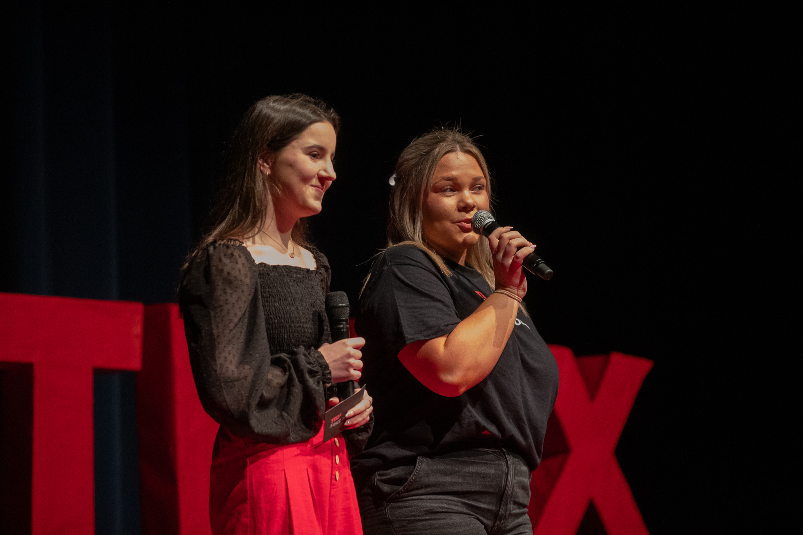

Past Years

Tristan Suplis
It is often said to not let your sickness, weakness, failures, etc. define you. However, Tristan Suplis offers a different perspective. In his talk "Let Your Sickness Define You" Tristan presents how our "weaknesses" can be turned into strengths if we begin to embrace them.
Ella Miskovsky & Ava Krehbiel
In schools today, technology has completely changed the way students learn, influencing how we access and acquire knowledge. Many students experience moments of feeling overwhelmed and struggling in school, but it's important to remember that you're not alone in navigating these challenges. Ava and Ella speak about how our daily reliance on technology has affected society today, and can sometimes make us feel "dumb."
Shawn McBrayer
Navigating the transition from a full time student to the workforce is no easy task. Professionalism and all that it entails is typically not taught within a classroom, therefore, it can sometimes be difficult for students to fully grasp. Shawn McBrayer shares important advice for those entering the workforce to consider. From job interviews to social media his talk dives deep into the expectations of the professional world and how to exceed them.
Ishaan Thakur
When we all imagine innovating something of our own, we are often met with instinctual hesitation. It’s that ever so slight and unsettling feeling that tells us that we are not good enough. “Embrace the Squirm” by Ishaan Thakur seeks to encourage all the young minds out there to forget common entrepreneurial stereotypes and pursue entrepreneurship regardless of age expectations. We all have our unique spark, yet most of us are too afraid to leap to kickstart our entrepreneurial journey and make billions. Would you really let that squirm hold you back?
Sophia Shahidzadeh
“Have fun while you’re young.” It’s a phrase we’ve all heard. But for high school student Sophia Shahidzadeh, that advice began to feel more like a boundary than encouragement. In this deeply personal and thought-provoking talk, she explores how this common saying, though often well-meaning, can subtly suggest that youth shouldn’t bother with responsibility, impact, or purpose.
Mikaela Ries
Everywhere we go, there is diversity among races, religions, identities, etc. Unfortunately, in American society, with diversity comes discrimination. Mikaela Ries dives into the surprising amount of discrimination still taking place in America, and how we as a society can overcome such discrimination. In her talk, “Seeing the Value of Change”, Mikaela covers the potential fears we might have that are preventing us from making a change. However, she will demonstrate that we can face these fears to make sure that the much needed change is made.
Ishan Kanikaram & Advait Funde
"Why Men Need to Talk: A Silent Epidemic" explores the often-ignored struggles men face with mental health. Through personal stories, facts, and light humor, Advait and Ishan challenge stereotypes and encourage open conversations to build a healthier future for everyone.
Neela Behzadi
In her TEDx talk, Why I’m Afraid of Silence, Neela Behzadi explores how cultural identity, self-perception, and the fear of judgment can shape — and silence — our authentic selves. Through personal stories, reflections on Maslow’s Hierarchy of Needs, and the journey of embracing her own “loudness,” Neela reveals how finding your voice is the first step toward genuine belonging and self-actualization. This talk is a powerful reminder to take up space, speak up, and build a life that reflects who you truly are.
Kaushik Setty
The "Wasted Time" concept means more to Kaushik because he experienced time theft firsthand in school. In life. Just as how he experiences time theft because of doom-scrolling and social media addiction, he knows everybody else does too. We all do. Hoping to pull himself and others out of these trenches, his TEDx Talk stands up for students who harbor parasitical relationships with social media, instead transforming it into a beneficial relationship that motivates students to be active. To fly higher. For Kaushik, time is more than time management - it's time preservation. One day at a time. One hour at a time. One second at a time.
Dorina Khakpour & Harmony Power
As dating culture continues to evolve, many people—especially young adults—struggle to form deep, lasting romantic and personal connections. In this thought-provoking TED Talk, high schoolers Harmony Power and Dorina Khakpour explore the complex realities behind modern relationships. They uncover surprising reasons why so many bonds falter, drawing on psychological frameworks like the "Five Stages of Grief" and "Attachment Theory" to guide their insights. Their message encourages listeners to reflect on their own strengths and vulnerabilities, and to rethink how they connect with others. Have you ever thought of your relationship as a garden? Discover how to nurture meaningful connections and help them flourish—not just in romance, but in every aspect of your life.
Anakha Ajai
This talk explores the vital role that creativity plays in emotional well-being, self-expression, and personal growth. Through stories and reflections, audiences will be challenged to rethink traditional definitions of success and recognize that creativity is not a distraction from achievement; rather, it is a foundation for meaningful connection, resilience, and purpose. We live in a world that measures success through numbers, titles, and achievements, leaving creativity to feel optional instead of essential. In this talk, Anakha Ajai challenges that mindset by asking: what happens when we stop valuing the people who help us feel, express, and understand ourselves?
Rishaan Ganpath
In this thought-provoking talk, audiences are challenged to question their assumptions and recognize how perspective shapes the way we interpret people, situations, and ideas. Drawing on humor, storytelling, and the classic tale of Gulliver's Travels, Rishaan Ganpath explores how our experiences, biases, and environments influence our beliefs. This talk encourages listeners to step outside their own point of view, embrace empathy, and appreciate the value of understanding different perspectives. Our next speaker invites us to question one of our biggest assumptions—that our perspective is the only correct one.
Liberty Power
Liberty Power shares a personal journey of growing up as the youngest child in a family with older sisters. She explores what it feels like to constantly compare herself to her siblings, rely on their opinions, and struggle to find her own voice. Throughout her talk, Liberty discovers that true confidence comes from making her own choices instead of always following others.
Lila and Luke Fahrenwald
Lila and Luke Fahrenwald, twins and juniors at FHS, share their experiences balancing competitive soccer with rigorous academics. They argue that everyone can benefit from team sports, and share the many ways that team sports can lead to school and future success.
Sudeepthi Maddukuri
In a world filled with constant notifications, entertainment, and endless distractions, boredom has become something we avoid at all costs. But what if boredom isn't a problem to solve, but an opportunity to grow? This talk challenges the belief that we always need to stay busy or stimulated to be productive, exploring how moments of boredom create space for creativity, self-reflection, and original thinking. Boredom isn’t a waste of time, in fact it’s where some of our best thinking begins.
Phoebe Wooldridge
In a world where we're constantly asked, "What's your passion?", it can feel like everyone else has life figured out while you're still searching. This talk challenges the belief that passion is something everyone is born with or must discover early in life. Instead, it explores how curiosity and a willingness to try new things can lead to a more authentic path.